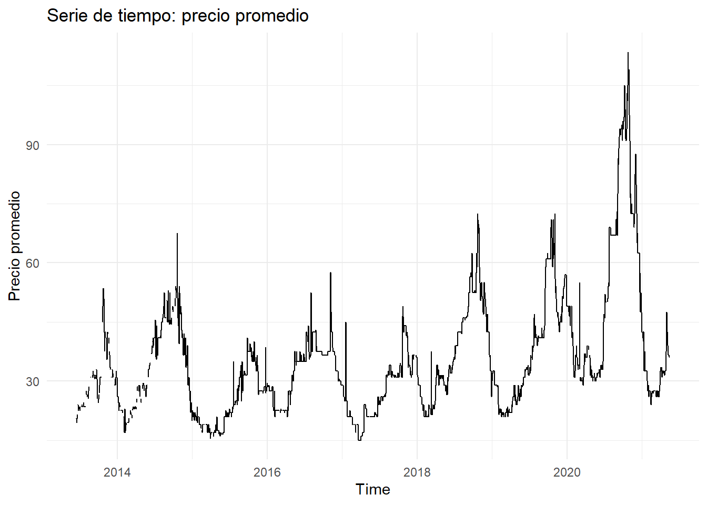
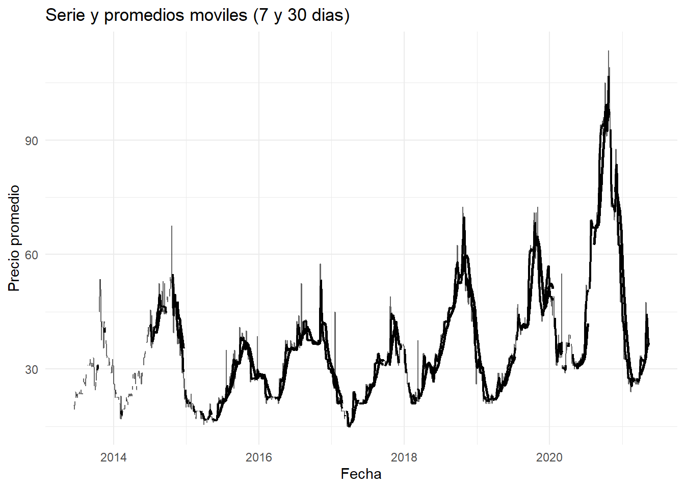
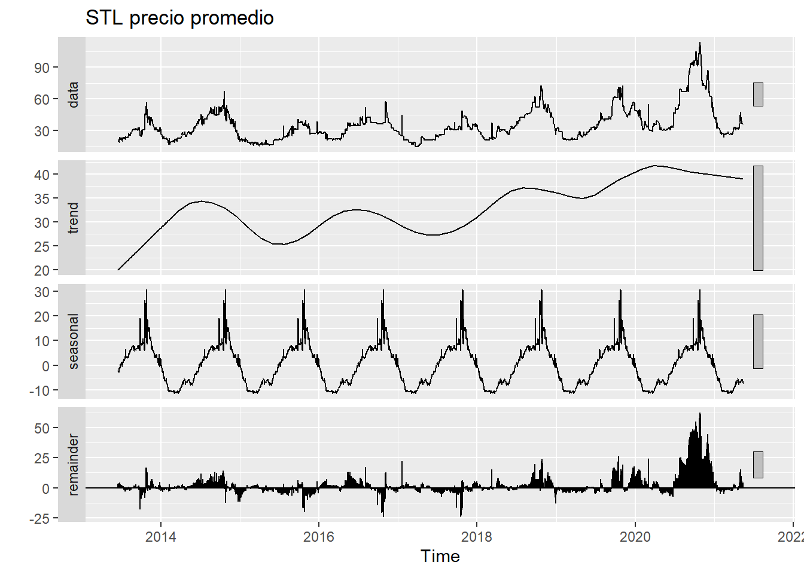
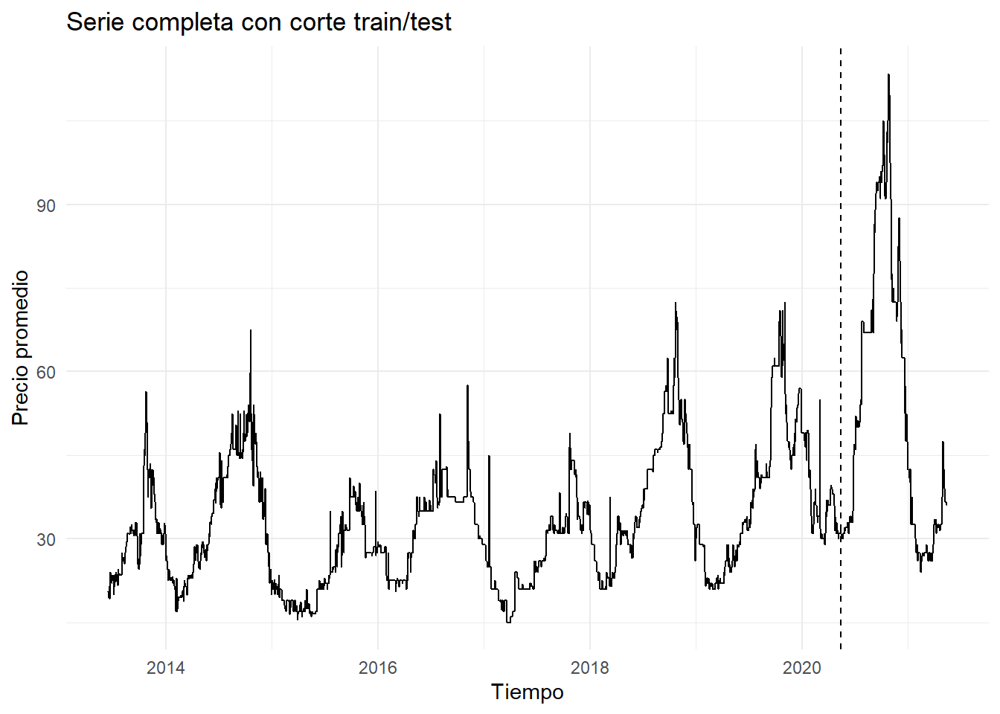
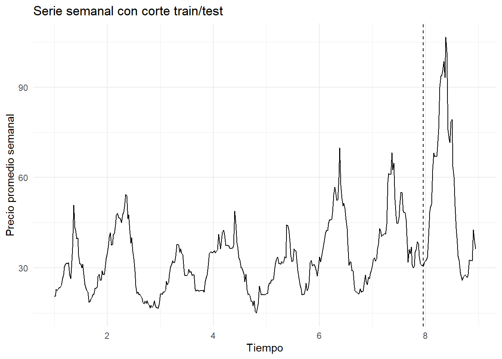
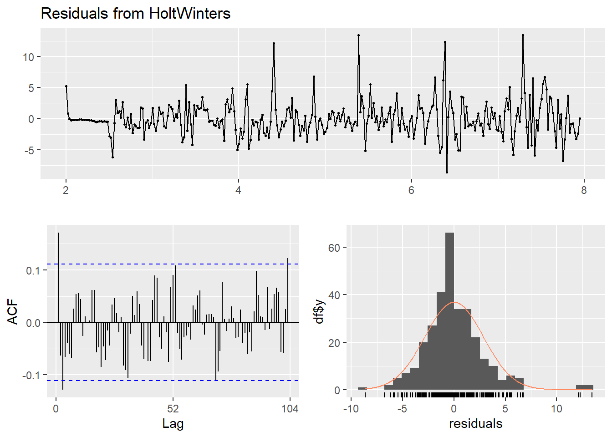
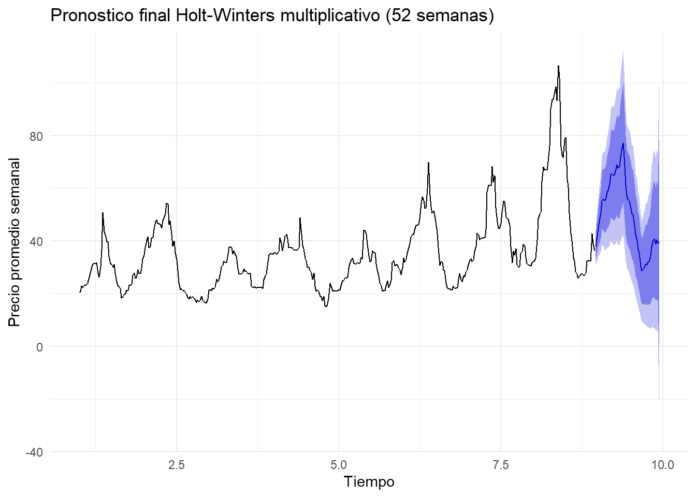

Capítulo 3 Pronóstico de Demanda HoltWinters
Este análisis aborda el pronóstico de los precios del “Potato Red” del mercado de Kalimati. Inicia con la carga, limpieza y un análisis exploratorio (EDA) para identificar tendencias y estacionalidad. Dada la alta frecuencia de los datos diarios, la serie se agrega a un formato semanal (frecuencia 52) para permitir un modelado estable. Posteriormente, se comparan varios métodos de suavizamiento exponencial (SES, Holt, Holt-Winters Aditivo y Multiplicativo) en conjuntos de entrenamiento y prueba. Finalmente, se selecciona el modelo Holt-Winters Multiplicativo, basado en su precisión (RMSE/MAPE), para generar un pronóstico validado a 52 semanas.
# Librerias (base originales + necesarias)
library(readr)
library(dplyr)
library(lubridate)
library(ggplot2)
library(forecast)
library(tseries)
library(here) # rutas reproducibles
library(tidyr) # regularizar fechas (complete)
library(slider) # promedios movilesRealizaremos nuestro analisis con un conjunto de datos de precios agrícolas proveniente del mercado de Kalimati (Nepal). Este dataset incluye información diaria sobre productos agrícolas, sus precios mínimos, máximos y promedio. A partir de estos datos se realizará un análisis exploratorio y un estudio de comportamiento temporal de los precios.
# Leer datos
data_raw <- readr::read_csv(csv_file, show_col_types = FALSE)
# Estandarizar nombres a snake para facilitar mapeo
nms <- tolower(gsub("[^a-zA-Z0-9]+", "_", names(data_raw)))
# Intentar mapear columnas canonicas (Commodity / Date / Minimum / Maximum / Average)
df <- data_raw
names(df) <- nms
# Mapeo flexible (case-insensitive)
pick_first <- function(cands) {
hit <- intersect(cands, names(df))
if (length(hit) == 0) return(NA_character_) else return(hit[1])
}
col_commodity <- pick_first(c("commodity","item","product","variety","name"))
col_date <- pick_first(c("date","fecha","day"))
col_min <- pick_first(c("minimum","min","min_price","price_min"))
col_max <- pick_first(c("maximum","max","max_price","price_max"))
col_avg <- pick_first(c("average","avg","avg_price","price_avg","mean_price"))
req <- c(col_commodity, col_date, col_min, col_max, col_avg)
if (any(is.na(req))) {
stop("No fue posible mapear columnas clave (commodity/date/min/max/average). Revisa nombres del CSV: ",
paste(names(df), collapse = ", "))
}
data <- df %>%
transmute(
Commodity = .data[[col_commodity]],
Date = as.Date(.data[[col_date]]),
Unit = NA_character_, # si no existe, queda NA (no se usa en el analisis)
Minimum = as.numeric(.data[[col_min]]),
Maximum = as.numeric(.data[[col_max]]),
Average = as.numeric(.data[[col_avg]])
)
# Chequeos basicos
stopifnot(inherits(data$Date, "Date"))3.1 Analisis de series de tiempo
3.1.1 Selección del item objetivo
Se selecciona el producto a analizar. El código prioriza “Potato Red”, pero si no existe, selecciona el producto con más observaciones mediante (count(Commodity, sort = TRUE))
if ("Potato Red" %in% unique(data$Commodity)) {
target_item <- "Potato Red"
} else {
target_item <- data %>%
count(Commodity, sort = TRUE) %>%
slice(1) %>%
pull(Commodity)
}
target_item## [1] "Potato Red"Una vez se cuenta con el dataset filtrado para el item “Potato Red”, mediante broupby y summarise se asegura que sólo exista un precio promedio por día evitando conflictos con entreadas duplicadas. Mediante complete() además se regulariza la serie temporal, insertando filas con NA para los días faltantes en el rango de fechas. Además se cponstruye la Serie de tiempos diaria para evaluar el comportamiento inicialmente.
# Filtrar y regularizar serie diaria
potatored <- data %>%
filter(Commodity == target_item) %>%
select(Date, Average) %>%
group_by(Date) %>%
summarise(Average = mean(Average), .groups = "drop") %>%
complete(Date = seq(min(Date, na.rm = TRUE), max(Date, na.rm = TRUE), by = "day")) %>%
arrange(Date)
# Construir objeto ts (diario, 365)
pot_ts <- ts(
potatored$Average,
start = c(lubridate::year(min(potatored$Date, na.rm = TRUE)),
lubridate::yday(min(potatored$Date, na.rm = TRUE))),
frequency = 365
)3.1.2 Serie basica y ACF
A continuación mediante autoplot se observa la tenedencia y la estacionalidad anual.
autoplot(pot_ts) +
labs(title = "Serie de tiempo: precio promedio", y = "Precio promedio") +
theme_minimal()
 La función de autocorrelación (ACF) confirma esta dependencia temporal, con correlaciones significativas en los primeros rezagos que luego disminuyen de forma progresiva. Esto demuestra que la serie no sigue un comportamiento completamente aleatorio, sino que existen patrones repetitivos en el tiempo.
La función de autocorrelación (ACF) confirma esta dependencia temporal, con correlaciones significativas en los primeros rezagos que luego disminuyen de forma progresiva. Esto demuestra que la serie no sigue un comportamiento completamente aleatorio, sino que existen patrones repetitivos en el tiempo.
3.1.3 Promedios moviles (evidencia de suavizado)
pot_ma <- potatored %>%
mutate(
ma7 = slide_dbl(Average, mean, .before = 6, .complete = TRUE),
ma30 = slide_dbl(Average, mean, .before = 29, .complete = TRUE)
)
ggplot(pot_ma, aes(Date, Average)) +
geom_line(linewidth = 0.5, alpha = 0.6) +
geom_line(aes(y = ma7), linewidth = 0.8) +
geom_line(aes(y = ma30), linewidth = 0.9) +
labs(title = "Serie y promedios moviles (7 y 30 dias)",
x = "Fecha", y = "Precio promedio") +
theme_minimal() Los gráficos de tendencia y promedios móviles muestran que los precios presentan fluctuaciones periódicas pero con una ligera tendencia creciente en el largo plazo. El promedio móvil de 7 días suaviza las variaciones diarias y deja entrever ciclos semanales asociados a la oferta en el mercado, mientras que el promedio de 30 días resalta un patrón más estructural que apunta a incrementos graduales, posiblemente relacionados con factores estacionales como la disponibilidad de cosecha o la variación de costos logísticos.
3.1.4 Rezagos (lags) y dependencia temporal
pot_lags <- potatored %>%
mutate(
lag1 = dplyr::lag(Average, 1),
lag7 = dplyr::lag(Average, 7),
lag30 = dplyr::lag(Average, 30)
)
# Scatter y_t vs y_{t-1}
ggplot(pot_lags, aes(lag1, Average)) +
geom_point(alpha = 0.3) +
geom_smooth(method = "lm", se = FALSE, linewidth = 0.7) +
theme_minimal() +
labs(title = "Scatter rezago 1 (y_t vs y_{t-1})", x = "y_{t-1}", y = "y_t")
# Scatter y_t vs y_{t-7}
ggplot(pot_lags, aes(lag7, Average)) +
geom_point(alpha = 0.3) +
geom_smooth(method = "lm", se = FALSE, linewidth = 0.7) +
theme_minimal() +
labs(title = "Scatter rezago 7 (aprox. semanal)", x = "y_{t-7}", y = "y_t")


El estudio de rezagos (lag 1, lag 7 y lag 30) refuerza esta observación: las gráficas de dispersión muestran una clara autocorrelación positiva, especialmente para rezagos cortos, indicando que los precios actuales dependen directamente de los valores recientes. Este comportamiento sugiere persistencia temporal: cuando los precios aumentan o disminuyen, tienden a mantener esa dirección durante varios días, lo cual es característico de mercados donde la información y las condiciones de oferta no cambian abruptamente.
3.1.5 Estacionalidad (descomposicion STL)
fit_stl <- stl(na.interp(pot_ts), s.window = "periodic", robust = TRUE)
autoplot(fit_stl) + labs(title = "STL precio promedio") La descomposición STL separó la serie en sus componentes de tendencia, estacionalidad y residuo. Los resultados muestran una estacionalidad marcada con ciclos anuales definidos: los precios tienden a elevarse en ciertas épocas del año y disminuir en otras, reflejando los periodos de cosecha y escasez. La tendencia general es estable con una leve inclinación al alza, mientras que los residuos mantienen una magnitud baja y no presentan patrones visibles, lo que indica que gran parte de la variabilidad del precio está explicada por la tendencia y la estacionalidad, sin presencia de choques exógenos significativos.
3.1.6 Análisis Conglomerado
En conjunto, estos hallazgos evidencian que la serie del precio promedio de Potato Red posee un comportamiento no estacionario, con una tendencia creciente y estacionalidad recurrente, pero sin irregularidades fuertes. El patrón identificado sugiere que los precios pueden modelarse de forma confiable mediante técnicas de suavizado exponencial o modelos ARIMA estacionales, una vez que se realicen las transformaciones necesarias para estabilizar la media y la varianza. En términos prácticos, los resultados reflejan que el mercado analizado responde a ciclos previsibles, lo cual facilita la planificación de precios, abastecimiento y estrategias de comercialización.
3.2 Estacionariedad y diferenciación
En esta segunda parte se busca analizar si la serie de tiempo seleccionada (Potato Red) cumple con el supuesto de estacionariedad. Una serie estacionaria es aquella cuya media y varianza permanecen constantes en el tiempo. En caso de que no sea estacionaria, se aplicarán procedimientos de diferenciación # o transformación para estabilizar la tendencia y la variabilidad.
y <- as.numeric(pot_ts)
if (anyNA(y)) {
idx_ok <- which(!is.na(y))
y_interp <- approx(x = idx_ok, y = y[idx_ok], xout = seq_along(y))$y
} else {
y_interp <- y}
pot_ts_clean <- ts(
y_interp,
start = start(pot_ts),
frequency = frequency(pot_ts)
)3.2.1 Verificación de estacionariedad (ADF Test)
##
## Augmented Dickey-Fuller Test
##
## data: pot_ts_clean
## Dickey-Fuller = -3.0587, Lag order = 14, p-value = 0.1301
## alternative hypothesis: stationaryEl p-valor es 0.13. Como p > 0.05, no podemos rechazar la H_0. Esto confirma estadísticamente lo que vimos en el ACF: la serie no es estacionaria y necesita ser diferenciada.
# Serie base a usar en esta etapa y verificamos que no tenga na ni valores negativos
y0 <- pot_ts_clean
sum(is.na(y0))## [1] 0## [1] TRUEy_log <- log(y0)
range(y0, na.rm = TRUE); range(y_log, na.rm = TRUE) # solo para verificar el cambio de escala## [1] 15.0 113.5## [1] 2.708050 4.731803## [1] 0.1322035Se aplica una transformación logarítmica. Esto no corrige la tendencia, sino que ayuda a estabilizar la varianza. Es común en series de precios donde las fluctuaciones crecen a medida que el precio sube. Como era de esperar, la serie logarítmica sigue siendo no estacionaria (p=0.13).
La transformación logarítmica ayudó a homogeneizar la variabilidad, pero no eliminó la tendencia ni la dependencia temporal. La serie transformada sigue teniendo raíz unitaria, por lo que pasamos a una diferenciacion de primer orden (d=1) sobre la serie logaritmica y volvemos a probar estacionariedad.
y_diff1 <- diff(y_log, differences = 1)
adf_diff1 <- tseries::adf.test(na.omit(y_diff1))
adf_diff1$p.value## [1] 0.01Se aplica una primera diferencia a la serie logarítmica, buscando eliminar la tendencia. Tras realizar la prueba adf nuevamente, es posible determinar que el p-valor es 0.01. Como p < 0.05, rechazamos la H_0. Concluimos que la serie transformada es estacionaria.
3.2.2 Interpretacion
Luego de aplicar la transformación logarítmica, la serie mantuvo la misma tendencia general, por lo que no se logró estacionariedad. Sin embargo, al diferenciarla una vez (d = 1), la prueba de Dickey–Fuller aumentada mostró un p-valor de 0.01, lo que indica que se rechaza la hipótesis nula de raíz unitaria. En consecuencia, la serie diferenciada es estacionaria.
Este resultado implica que la tendencia determinista fue eliminada mediante la primera diferencia, estabilizando la media a lo largo del tiempo. Por otro lado, la transformación logarítmica permitió controlar la heterocedasticidad, de modo que las fluctuaciones de la serie ahora son de magnitud comparable. La combinación de ambos pasos —logaritmo y diferencia de primer orden— produce una serie adecuada para modelar mediante métodos lineales, como los modelos ARIMA o SARIMA.
Visualmente, la serie diferenciada oscila alrededor de cero y las funciones de autocorrelación (ACF y PACF) se estabilizan rápidamente, lo que refuerza la evidencia de estacionariedad.
3.3 Suavizamiento y Holt-Winters sobre la variable tiempo
## [1] 2889## [1] 3653.3.1 Particion de entrenamiento /prueba
h_test <- min(365, floor(length(y_hw)*0.2)) # 1 año o ~20% si no alcanza
n <- length(y_hw)
y_train <- window(y_hw, end = time(y_hw)[n - h_test])
y_test <- window(y_hw, start = time(y_hw)[n - h_test + 1])
autoplot(y_hw) +
geom_vline(xintercept = time(y_hw)[n - h_test + 1], linetype = 2) +
labs(title = "Serie completa con corte train/test",
y = "Precio promedio", x = "Tiempo") +
theme_minimal()
Se prepara la validación del modelo. La serie se divide en y_train y y_test. Es crucial en series de tiempo usar window() y no un muestreo aleatorio, ya que el orden temporal debe preservarse.
3.3.2 Agregación semanal
library(zoo)
# y_hw: serie ts diaria (freq=365)
stopifnot(frequency(y_hw) %in% c(365, 366))
#secuencia de fechas real para la ts diaria
tsp_hw <- tsp(y_hw) # c(start, end, freq)
start_year <- floor(tsp_hw[1])
start_frac <- tsp_hw[1] - start_year
start_date <- as.Date(paste0(start_year, "-01-01")) + round(start_frac * 365.25)
fechas_all <- seq.Date(from = start_date, by = "day", length.out = length(y_hw))
z_all <- zoo(as.numeric(y_hw), fechas_all)
#Agregar por semana calendario
z_week <- aggregate(z_all, as.Date(cut(index(z_all), "week")), mean, na.rm = TRUE)
#Convertimos a ts semanal (freq = 52)
y_w <- ts(as.numeric(z_week), frequency = 52)
#Split train/test semanal
h_test_w <- min(52, floor(length(y_w) * 0.2))
n_w <- length(y_w)
y_train_w <- window(y_w, end = time(y_w)[n_w - h_test_w])
y_test_w <- window(y_w, start = time(y_w)[n_w - h_test_w + 1])
autoplot(y_w) +
geom_vline(xintercept = time(y_w)[n_w - h_test_w + 1], linetype = 2) +
labs(title = "Serie semanal con corte train/test",
y = "Precio promedio semanal", x = "Tiempo") +
theme_minimal()
Modelar una estacionalidad de 365 períodos es computacionalmente inviable y estadísticamente inestable para HoltWinters o ets. Mediante la agregación de los datos a una frecuencia menor que aún capture la estacionalidad (en este caso se escogió semanal el problema de soluciona, generando una nueva ts semanal y se aplica nuevamente la división de los datos en train y test
3.3.3 Modelos de suavizamiento y Holt-Winters en serie semanal
# Horizonte de prueba
h <- length(y_test_w)
# Modelos de suavizamiento base
# Suavizamiento exponencial simple (SES)
fit_ses_w <- ets(y_train_w, model = "ANN")
fc_ses_w <- forecast(fit_ses_w, h = h)
# Holt: tendencia aditiva
fit_holt_w <- ets(y_train_w, model = "AAN")
fc_holt_w <- forecast(fit_holt_w, h = h)
# Holt-Winters con función base stats::HoltWinters
fit_hwa_w <- HoltWinters(y_train_w, seasonal = "additive")
fit_hwm_w <- HoltWinters(y_train_w, seasonal = "multiplicative")
# Generar pronósticos a h pasos
fc_hwa_w <- forecast(fit_hwa_w, h = h)
fc_hwm_w <- forecast(fit_hwm_w, h = h)
# Resumen de parámetros de suavizamiento
pars_w <- list(
SES = fit_ses_w$par,
Holt = fit_holt_w$par,
HW_adi = fit_hwa_w$coefficients,
HW_multi = fit_hwm_w$coefficients
)
metodos_w <- c(
SES = fit_ses_w$method,
Holt = fit_holt_w$method,
HW_adi = "Holt-Winters aditivo (HoltWinters)",
HW_mul = "Holt-Winters multiplicativo (HoltWinters)"
)
list(pars = pars_w, metodos = metodos_w)## $pars
## $pars$SES
## alpha l
## 0.9998999 20.0661412
##
## $pars$Holt
## alpha beta phi l b
## 0.9998998 0.1131366 0.8000015 19.3507661 0.7318030
##
## $pars$HW_adi
## a b s1 s2 s3 s4
## 39.08244375 0.07882721 -7.65617219 -5.33129937 -2.12172776 -0.60521373
## s5 s6 s7 s8 s9 s10
## 1.67227131 3.70855086 3.86297747 4.29730738 4.70950257 5.51286110
## s11 s12 s13 s14 s15 s16
## 6.58108183 9.34052131 11.67282675 11.56985459 10.72690049 10.62915737
## s17 s18 s19 s20 s21 s22
## 11.56624926 14.32396189 12.96493891 12.91210622 15.60833595 19.70484488
## s23 s24 s25 s26 s27 s28
## 18.21542017 15.04288451 8.57289145 4.41893044 3.59468994 2.26948285
## s29 s30 s31 s32 s33 s34
## 1.41348224 1.16589200 0.07345107 -2.59161738 -5.38569070 -6.81747767
## s35 s36 s37 s38 s39 s40
## -8.35116126 -10.31002086 -14.36805886 -15.48013931 -13.59119371 -14.10375330
## s41 s42 s43 s44 s45 s46
## -12.98609882 -13.91879059 -12.80762063 -12.45344901 -10.91079687 -9.50278976
## s47 s48 s49 s50 s51 s52
## -7.48181474 -7.63951511 -9.66359895 -9.41494901 -8.19836375 -8.36815804
##
## $pars$HW_multi
## a b s1 s2 s3 s4
## 40.06957603 0.07882721 0.78984647 0.86149189 0.95592829 0.99520880
## s5 s6 s7 s8 s9 s10
## 1.06150922 1.11859277 1.10742123 1.11547832 1.13362719 1.15295252
## s11 s12 s13 s14 s15 s16
## 1.19755872 1.28051297 1.34512974 1.33136792 1.29845693 1.29564795
## s17 s18 s19 s20 s21 s22
## 1.31337013 1.37966490 1.36129664 1.37542631 1.45910223 1.55273805
## s23 s24 s25 s26 s27 s28
## 1.49801968 1.41880910 1.25803359 1.12986066 1.10809063 1.06878253
## s29 s30 s31 s32 s33 s34
## 1.05012792 1.03448499 1.00251606 0.92562241 0.84794487 0.78549769
## s35 s36 s37 s38 s39 s40
## 0.73966473 0.68969443 0.59218461 0.55743071 0.58537805 0.58407654
## s41 s42 s43 s44 s45 s46
## 0.61227139 0.60444293 0.63415394 0.64018299 0.67488001 0.72564177
## s47 s48 s49 s50 s51 s52
## 0.78927007 0.78769837 0.73692250 0.74269354 0.77194581 0.76652385
##
##
## $metodos
## SES
## "ETS(A,N,N)"
## Holt
## "ETS(A,Ad,N)"
## HW_adi
## "Holt-Winters aditivo (HoltWinters)"
## HW_mul
## "Holt-Winters multiplicativo (HoltWinters)"Se ajustan cuatro modelos de suavizamiento exponencial al conjunto de entrenamiento semanal (y_train_w).
Se evaluán los modelos ANN más conocido como SES (Error Aditivo, sin tendencia, sin estacionalidad). Por otra parte el modelo Holt es un modelo con Error Aditivo, Tendencia Aditiva y sin Estacionalidad. Y por último, el modelo HoltWinters es un modelo completo que asume que la estacionalidad es constante.
3.3.4 Comparación de precisión fuera de muestra
Se calcula la precisión de los pronósticos de cada modelo contra los datos reales y_test_w. Se comparan las métricas de error (RMSE, MAE, MAPE) del conjunto de prueba.
# Calcular métricas de error para cada modelo en el conjunto de prueba
acc_tbl <- bind_rows(
data.frame(model = "SES", accuracy(fc_ses_w, y_test_w)),
data.frame(model = "Holt", accuracy(fc_holt_w, y_test_w)),
data.frame(model = "HW_adi", accuracy(fc_hwa_w, y_test_w)),
data.frame(model = "HW_mul", accuracy(fc_hwm_w, y_test_w))
) %>%
select(model, RMSE, MAE, MAPE)
acc_tbl## model RMSE MAE MAPE
## Training set...1 SES 2.929804 1.928708 5.748854
## Test set...2 SES 33.778723 24.276695 34.505452
## Training set...3 Holt 2.902352 1.901817 5.638535
## Test set...4 Holt 34.593228 24.973105 35.456690
## Training set...5 HW_adi 2.984060 2.102575 6.453931
## Test set...6 HW_adi 20.668712 14.555681 20.798164
## Training set...7 HW_mul 2.846973 1.996849 6.036061
## Test set...8 HW_mul 18.997168 13.487363 19.577035El modelo Holt-Winters multiplicativo (HW_mul) es el mejor, porque presenta los errores más bajos (RMSE y MAPE) en la ventana de prueba. Esto indica que la estacionalidad es proporcional al nivel de la serie (los picos crecen cuando el nivel general sube), lo cual es consistente con lo que se veia en el grafico.
3.3.5 Diagnostico de residuos
Se realizarán dos pruebas estadísticas al pronóstico ganador. Por una parte el Gráfico ACF de Residuos, muestra la autocorrelación de los errores del modelo. Idealmente, ningún rezago debe superar las líneas azules. Esto significaría que los errores son “ruido blanco” y que el modelo ha capturado toda la información predecible.En segundo lugar, la Prueba Ljung-Box es la prueba estadística formal para la autocorrelación de los residuos.Hipótesis Nula (H_0): Los residuos son independientes (son ruido blanco).

##
## Ljung-Box test
##
## data: Residuals from HoltWinters
## Q* = 76.422, df = 62, p-value = 0.1029
##
## Model df: 0. Total lags used: 62Al comparar los modelos de suavizamiento, Holt y Holt-Winters, se encontró que el Holt-Winters multiplicativo obtuvo los mejores resultados en la ventana de prueba, con los menores valores de RMSE (18.99) y MAPE (19.57 %). Esto indica que la serie presenta una estacionalidad proporcional al nivel, es decir, las fluctuaciones son más amplias cuando los valores son altos.
El análisis de residuos respalda la adecuación del modelo: el p-valor = 0.1029 del test de Ljung-Box confirma que no existe autocorrelación significativa (residuos ≈ ruido blanco). Por tanto, el modelo Holt-Winters multiplicativo logra capturar adecuadamente la tendencia y la estacionalidad de la serie semanal del precio promedio del Potato Red.
3.3.6 Pronostico final
Reentrenamiento: Ahora que hemos probado que el modelo HW Multiplicativo es el mejor, lo reentrenamos usando todos los datos semanales (y_w), no solo el conjunto de entrenamiento. Esto le da al modelo la mayor cantidad de información posible para estimar los parámetros finales.
Pronóstico: Se genera el pronóstico final hacia el futuro (h = 52 semanas, un año).
# Reentrenar el modelo Holt-Winters multiplicativo con toda la serie semanal
fit_final_hw <- HoltWinters(y_w, seasonal = "multiplicative")
# pronóstico a 52 semanas (≈ 1 año)
h_future <- 52
fc_final_hw <- forecast(fit_final_hw, h = h_future)
# Visualizacion del pronóstico final
autoplot(fc_final_hw) +
labs(
title = "Pronostico final Holt-Winters multiplicativo (52 semanas)",
y = "Precio promedio semanal",
x = "Tiempo"
) +
theme_minimal()
# primeras filas de la tabla de pronostico
head(data.frame(
Semana = time(fc_final_hw$mean),
Pronostico = round(as.numeric(fc_final_hw$mean), 2),
LI_80 = round(fc_final_hw$lower[,1], 2),
LS_80 = round(fc_final_hw$upper[,1], 2),
LI_95 = round(fc_final_hw$lower[,2], 2),
LS_95 = round(fc_final_hw$upper[,2], 2)
), 10)## Semana Pronostico LI_80 LS_80 LI_95 LS_95
## 1 8.961538 37.69 33.31 42.07 30.99 44.39
## 2 8.980769 40.88 35.05 46.72 31.96 49.81
## 3 9.000000 45.08 37.83 52.33 33.99 56.16
## 4 9.019231 47.46 39.09 55.83 34.66 60.26
## 5 9.038462 50.77 41.19 60.34 36.13 65.41
## 6 9.057692 55.25 44.31 66.19 38.52 71.98
## 7 9.076923 55.96 44.35 67.58 38.20 73.73
## 8 9.096154 55.31 43.30 67.32 36.95 73.67
## 9 9.115385 55.66 43.09 68.24 36.43 74.90
## 10 9.134615 58.37 44.76 71.99 37.55 79.203.3.7 Conclusiones
Tras evaluar diferentes métodos de suavizamiento exponencial, se determinó que el modelo Holt-Winters multiplicativo fue el que presentó el mejor desempeño predictivo, con los menores errores (RMSE = 18.99 y MAPE = 19.6 %) en la ventana de prueba.
Este resultado confirma que la serie presenta estacionalidad proporcional al nivel, es decir, cuando el precio promedio del Potato Red aumenta, las fluctuaciones también lo hacen en la misma proporción.
Los residuos del modelo no mostraron autocorrelación significativa (p-valor = 0.1029), por lo que se concluye que el modelo explica adecuadamente la estructura temporal.
Con la serie completa y el modelo reentrenado, el pronóstico a 52 semanas muestra una tendencia oscilante con picos regulares y amplitud similar a la observada históricamente. Las bandas de confianza (80 % y 95 %) reflejan un nivel de incertidumbre moderado, lo que otorga confianza en las estimaciones.
En conjunto, el método Holt-Winters multiplicativo demuestra ser una herramienta sólida y confiable para proyectar el comportamiento estacional del precio semanal del Potato Red.
3.4 Desarrollo metodológico y justificación de decisiones
El proceso de aplicación del modelo de Holt-Winters a la serie de tiempo del precio promedio del Potato Red implicó diversos ajustes metodológicos debido a las características particulares de los datos.
La variable de estudio correspondía a una serie diaria con una extensión superior a 2800 observaciones y frecuencia anual de 365. Si bien esta cantidad de datos representaba una fuente valiosa de información, también generó limitaciones computacionales al momento de ajustar modelos estacionales como ets(model = “AAA”) o hw(seasonal = “additive”), debido a que la función ets()` no está optimizada para manejar estacionalidades tan largas.
Durante los primeros intentos, el software arrojó el error “Frequency too high” o se quedaba ejecutando indefinidamente. Esto motivó una revisión del enfoque, identificando que la estacionalidad de interés no necesariamente se presentaba de manera diaria, sino más bien en ciclos semanales o mensuales, propios de los precios agrícolas.
3.4.1 Ajuste de la frecuencia temporal
Como solución, se decidió agregar la serie a frecuencia semanal, calculando el promedio de los precios diarios.
Esta decisión permitió conservar la forma cíclica de la serie (picos y valles regulares) y, al mismo tiempo, reducir la frecuencia de 365 a 52, lo cual hizo posible aplicar modelos estacionales de forma estable y con un tiempo de cómputo razonable.
En la práctica, esto significó reconstruir la serie con una frecuencia semanal (frequency = 52), evitando la sobrecarga que impedía el ajuste de Holt-Winters en la versión original.
3.4.2 Modelos aplicados
Una vez ajustada la frecuencia, se implementaron cuatro modelos de suavizamiento:
- Suavizamiento exponencial simple (SES) – Captura únicamente el nivel de la serie.
- Método de Holt – Incorpora tendencia aditiva.
- Holt-Winters aditivo – Considera tendencia y estacionalidad de amplitud constante.
- Holt-Winters multiplicativo – Considera estacionalidad proporcional al nivel.
Debido a los errores recurrentes con ets() y hw(), se optó finalmente por la función stats::HoltWinters(), que permite ajustar modelos estacionales de manera más estable con series largas o de alta frecuencia.
3.4.3 Validación del modelo
La serie semanal se dividió en un conjunto de entrenamiento (80%) y otro de prueba (20%), correspondiente aproximadamente a un año de observaciones.
Con esta división, se evaluó el desempeño predictivo de cada modelo mediante métricas como RMSE, MAE y MAPE.
Los resultados mostraron que el modelo Holt-Winters multiplicativo presentó el mejor desempeño (RMSE = 18.99, MAPE = 19.6%), superando a las versiones aditiva, Holt y SES.
Esto indica que la estacionalidad es proporcional al nivel de la serie: cuando los precios son altos, las fluctuaciones semanales también lo son.
3.4.4 Diagnóstico de residuos
Para validar el ajuste, se analizaron los residuos del modelo Holt-Winters multiplicativo.
El test de Ljung-Box (p-valor = 0.1029) indicó ausencia de autocorrelación significativa, lo cual demuestra que el modelo logra capturar adecuadamente la tendencia y la estacionalidad de los datos.
Además, el gráfico ACF de los residuos no mostró patrones sistemáticos, confirmando que el error se comporta como ruido blanco.
3.4.5 Pronóstico final
Con base en el modelo seleccionado, se reentrenó la serie completa y se realizó un pronóstico a 52 semanas (equivalente a un año).
El resultado mostró una evolución oscilante, con picos estacionales regulares y una amplitud coherente con los patrones históricos observados.
Las bandas de confianza del 80% y 95% se mantuvieron en rangos moderados, reflejando un nivel de incertidumbre aceptable.
3.4.6 Conclusión integradora
En síntesis, el desarrollo de este modelo implicó un proceso iterativo de ajuste y validación.
Se comprobó que aplicar Holt-Winters directamente sobre la serie diaria era impracticable por su frecuencia alta, por lo que fue necesario agregar la serie a frecuencia semanal para estabilizar el modelo.
Este cambio permitió aplicar el método de forma exitosa y obtener resultados coherentes, concluyendo que el modelo Holt-Winters multiplicativo es una herramienta sólida para pronosticar el comportamiento estacional del precio del Potato Red, combinando buena precisión y consistencia temporal.